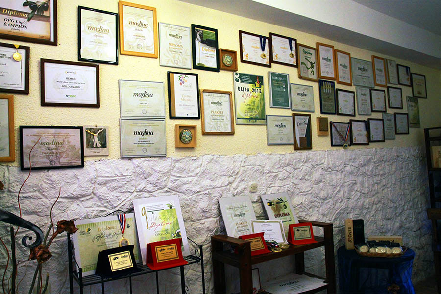

Priznanja
Kakvoća potvrđena od prvih uroda
Visokoj kakvoći ekstra djevičanskog maslinovog ulja Bembo svjedoče brojna priznanja, s domaćih i međunarodnih ocjenjivanja.

Popis priznanja
Medalje, diplome i povelje
- 2019
EVO IOOC 2019
- Zlatna nagrada (Gold)
- 2015
Povelja „Edmund Modun”
- Za obnovu (revitalizaciju) hrvatskog maslinarstva, pod pokroviteljstvom Predsjednice Republike Hrvatske
- 2015
Maslina Split 2015
- Zlato za domaće sortno EDMU – Puntoža
- Zlato za domaće sortno EDMU – Rožinjola
- Zlato za domaće sortno EDMU – Buža
- Zlato za strano sortno EDMU – Leccino
- Zlatna medalja za višesortno EDMU
- 2015
Oleum Olivarum 2015 – Krasica
- Zlato za domaće sortno EDMU – Puntoža
- Zlato za domaće sortno EDMU – Buža
- Vicešampion natjecanja
- 2015
Dani masline, Zadar 2015
- Zlatno EDMU u kategoriji pakovine – Puntoža
- Zlatno EDMU u kategoriji pakovine – Leccino
- 2015
ULIKA Medulin 2015
- Zlato za EDMU – Puntoža
- Zlato za EDMU – Rožinjola
- Top 10 najboljih EDMU
- 2015
Noćnjak 2015
- Zlatna diploma za kozmetički proizvod od maslina: prirodni sapun od maslinovog ulja
- 2015
New York International Olive Oil Competition
- Silver Award – World’s Best Olive Oils for 2015
- 2015
Olive Japan 2015
- Winner – Silver Medal Award
EDMU = ekstra djevičansko maslinovo ulje. Popis prenosimo s dosadašnje stranice gospodarstva.
Galerija